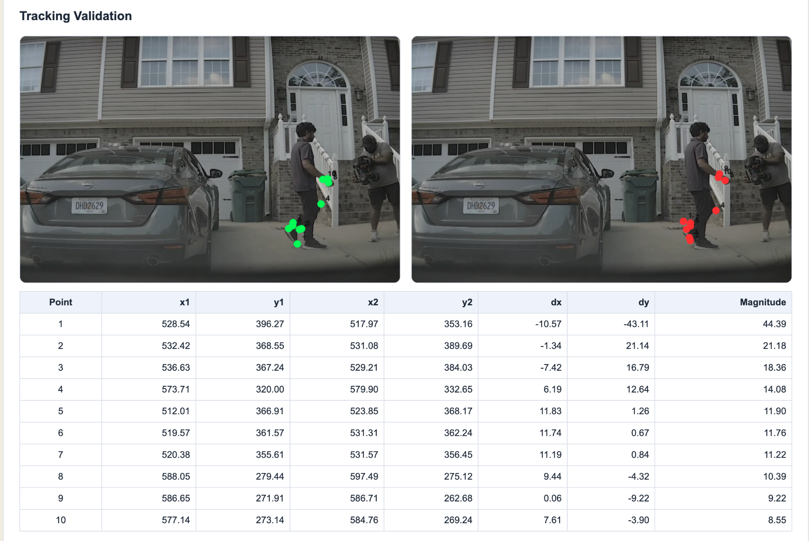
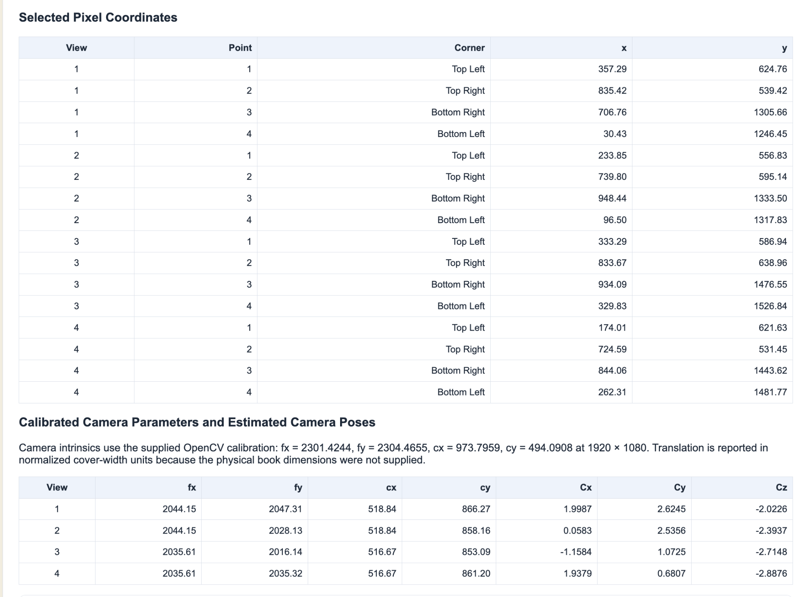

Module 5
This page runs entirely in the browser and is compatible with a static Vercel deployment.
Problem 1 - Optical Flow
Two preloaded videos are included. You can also upload another video. The page tracks feature points using pyramidal Lucas-Kanade optical flow and displays motion vectors between consecutive frames.
Source Video
Optical Flow Visualization
Tracking Validation
| Point | x1 | y1 | x2 | y2 | dx | dy | Magnitude |
|---|
What optical flow tells us
Optical flow estimates the apparent motion of image points between consecutive frames. The horizontal and vertical components are dx and dy, and the displacement magnitude is sqrt(dx² + dy²). Large vectors indicate stronger image motion while near-zero vectors indicate little or no frame-to-frame motion.
Problem 2 - Planar Multi-View Reconstruction
This uses the four-corner homography version of your Python program. Four preloaded book images are included. For each view, click the same four physical corners of the book cover in this order: Top Left, Top Right, Bottom Right, Bottom Left.
Results Obtained During Experiment
These are saved outputs from the completed Module 5 experiments. They are permanently displayed in the interface so the obtained results can be reviewed without rerunning the optical-flow or reconstruction demos.
Problem 1 - Optical Flow Result

Problem 2 - Four Viewpoints and Reconstruction
